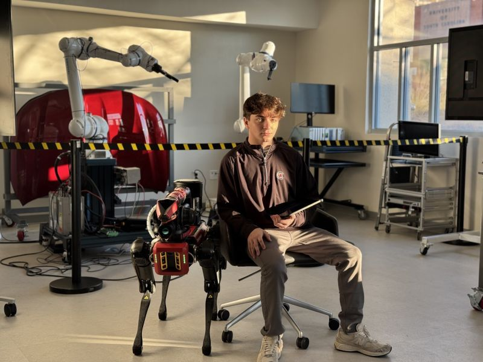
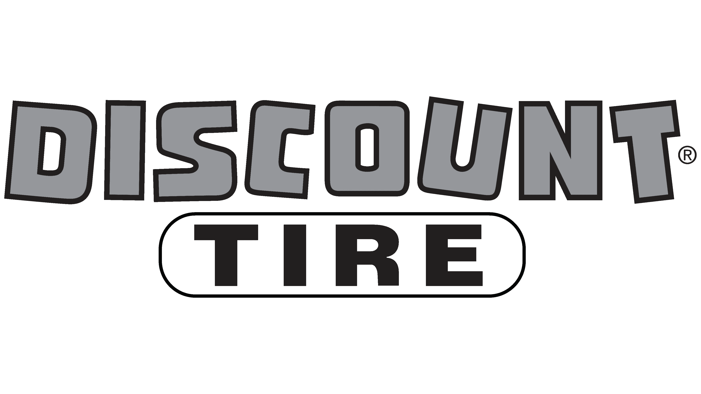
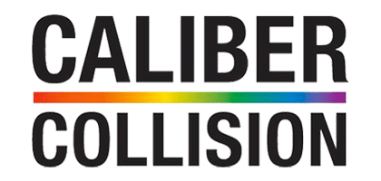
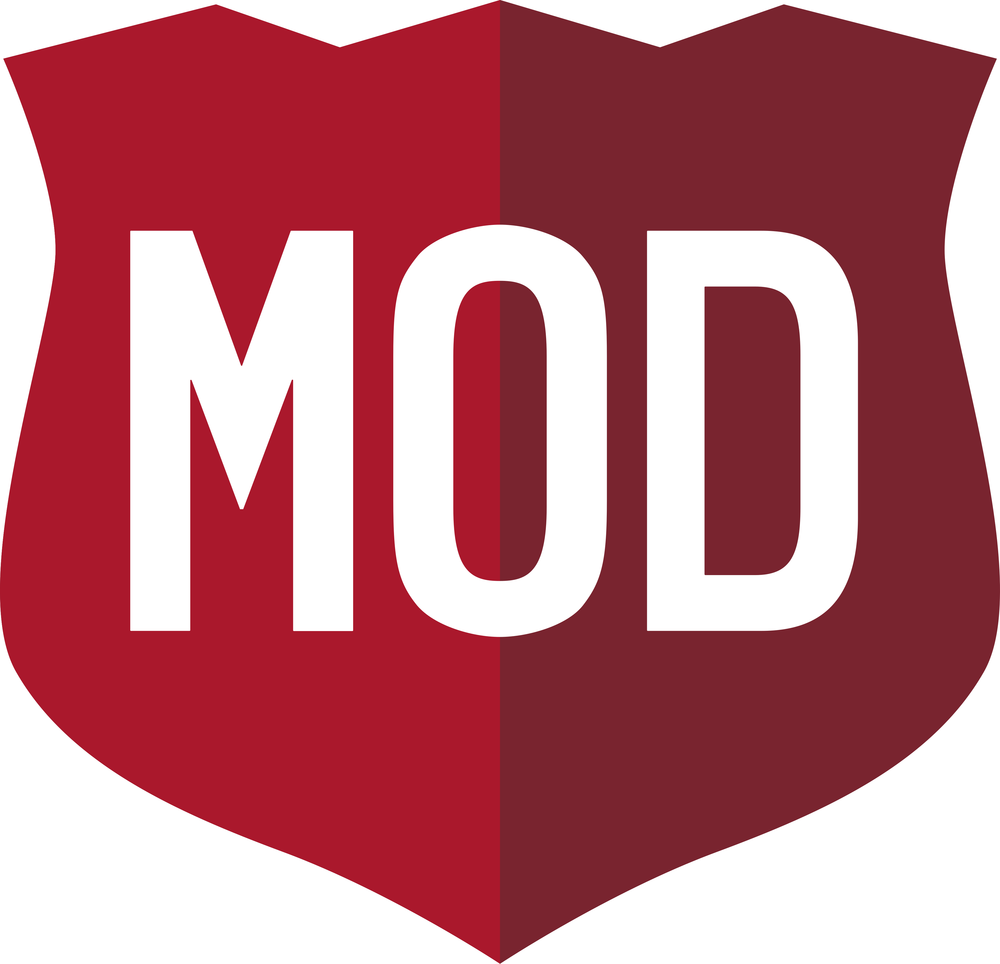
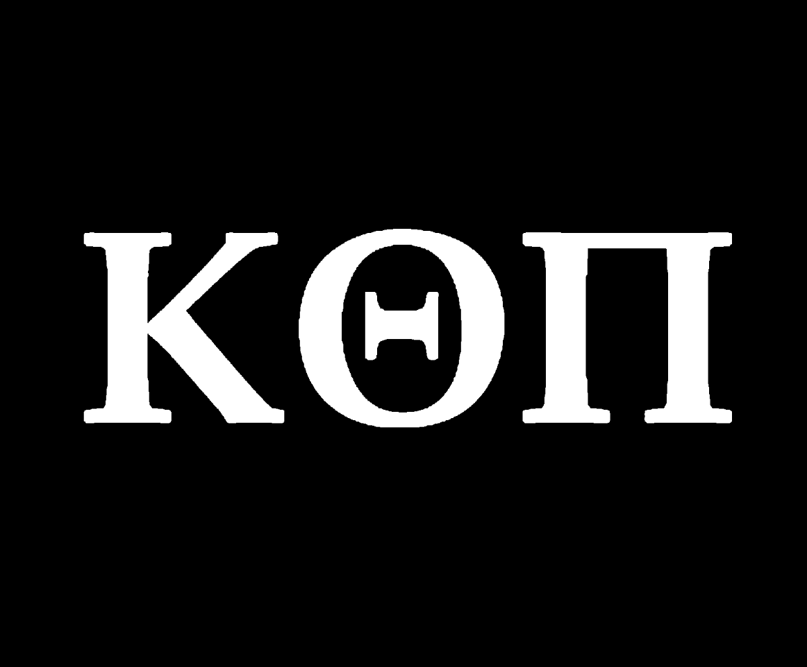
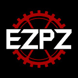

NATHAN WARDY
SOFTWARE ENGINEER & COMPUTER ENGINEERING STUDENT

I WANT TO MAKE AN IMPACT ON THE WORLD, AND I BELIEVE ENGINEERING IS HOW I DO THAT.
I AM FOCUSED ON LOOKING FOR HIGH RISK HIGH PRESSURE WITH HIGH IMPACT WORK.
TECHNICAL SKILLS
EXPERIENCE
BANK OF AMERICA
SOFTWARE ENGINEER INTERN
MAY 2026 - PRESENT
- INCOMING SOFTWARE ENGINEER INTERN AT BANK OF AMERICA FOR THE SUMMER OF 2026

UOFSC CENTER FOR INDUSTRY SOLUTIONSPROJECT LEAD ENGINEER
JAN 2026 - JUN 2026
- LEAD ENGINEER FOR PROJECT CAELUS, A UNIVERSITY-FUNDED AUTONOMOUS DRONE INITIATIVE, RESPONSIBLE FOR OVERALL SYSTEM DEVELOPMENT
- MANAGED MULTIDISCIPLINARY ENGINEERING TEAMS ACROSS AVIONICS, SOFTWARE, AND MECHANICAL DESIGN
- DROVE PROCUREMENT AND SUPPLIER ENGAGEMENT INITIATIVES TO SUPPORT DOMESTIC SOURCING OF CRITICAL DRONE SYSTEM COMPONENTS
RESEARCH FELLOW
NOV 2025 - DEC 2025
- RESEARCH FOCUS IN SYSTEM INTEGRATION USING STM32 MICROCONTROLLERS, EMBEDDED SYSTEMS, AND CONNECTED IOT DEVICES
- RESEARCH FOCUS IN FLIGHT CONTROLLER SYSTEMS PCB DESIGNS AND INTEGRATION WITH NVIDIA JETSON ORIN NANO
- OPERATOR, PROGRAMMER AND TECHNICIAN OF UNIVERSITY OF SOUTH CAROLINA'S TWIN YASKAWA MOTOMAN HC10DTP ROBOTIC ARMS
CENTENE CORPORATION
SYSTEMS ENGINEER INTERN
AUG 2025 - JUN 2026
- SUPPORTED THE SYSTEM ARCHITECTURE TEAM IN OVERSEEING IT, HR, FINANCE, AND OPERATIONS APPLICATIONS ACROSS THE ENTERPRISE
- OPTIMIZED RESOURCE MANAGEMENT AND DEVELOPED SOLUTIONS IMPROVING EFFICIENCY IN SYSTEMS SERVING 28M+ MEMBERS
- LED THE DEVELOPMENT OF CENMAP, A RESOURCE MANAGEMENT APPLICATION USED BY 480+ PRODUCT OWNERS AND EXECUTIVE LEADERSHIP
INTERN TEAM LEAD APPLICATION DEVELOPER
APR 2025 - AUG 2025
- DELIVERED OASIS SHIELD, AN OAUTH 2.0 / JWT SERVICE UNIFYING AUTHENTICATION FOR MAIL OPERATIONS MICROSERVICES
- BUILT AN S3 DOCUMENT API WITH AWS S3 MULTIPART UPLOADS, LAMBDA, DYNAMODB, AND STEP FUNCTIONS FOR SECURE PHI FILE UPLOADS
- PARTNERED WITH RADIANT LOGIC AND AXWAY TO MODERNIZE IDENTITY AND DATA WORKFLOWS IN THE OASIS PLATFORM
- LED 5 INTERNS, ARCHITECTED SOLUTIONS, AND SERVED AS POC FOR LEADERSHIP, RUNNING AGILE STANDUPS AND PRESENTING ROADMAPS
SITE RELIABILITY ENGINEER INTERN
MAY 2024 - APR 2025
- AUTOMATED SRE WORKFLOWS IN JIRA, SERVICENOW, AND GITLAB USING PYTHON (SELENIUM, SMTPLIB, REST APIS) TO REDUCE TOIL AND IMPROVE OBSERVABILITY
- WORKED WITH GITLAB PIPELINES AND THE BLUE-GREEN DEPLOYMENT CYCLE, SHADOWING PRODUCTION DEPLOYMENTS AND ON-CALL RESPONSES
- SUPPORTED VMWARE TO AWS MIGRATION FOR AN APPEALS & GRIEVANCES APPLICATION, WRITING CLOUDFORMATION TEMPLATES FOR EC2, LBS, AND LAMBDAS
- DEVELOPMENT WITH AI/ML TOOLS INCLUDING AWS SAGEMAKER AND GOOGLE T5 NLP TO AUTOMATE VULNERABILITY REMEDIATION INSTRUCTIONS

DISCOUNT TIRESERVICE COORDINATOR
MAR 2023 - FEB 2024
- COORDINATED SERVICE OPERATIONS AND MANAGED CUSTOMER WORKFLOW ACROSS A HIGH-VOLUME AUTOMOTIVE RETAIL ENVIRONMENT
- ENSURED QUALITY STANDARDS AND TEAM PERFORMANCE THROUGH HANDS-ON LEADERSHIP AND SCHEDULING
CREW CHIEF
JAN 2023 - JUN 2023
- LED SHOP CREW IN DAY-TO-DAY OPERATIONS, OVERSEEING TIRE INSTALLATION, ROTATION, AND BALANCING WORKFLOWS
- TRAINED AND GUIDED NEW TEAM MEMBERS ON SAFETY PROCEDURES AND SERVICE STANDARDS
TECHNICIAN
NOV 2022 - JAN 2023
- PERFORMED TIRE INSTALLATION, ROTATION, BALANCING, AND REPAIR SERVICES TO MANUFACTURER SPECIFICATIONS

CALIBER COLLISIONPARTS MANAGER
OCT 2021 - SEP 2022
- MANAGED 1,500 INVOICES AMOUNTING TO $500,000 PER MONTH AND MAINTAINED VENDOR RELATIONSHIPS ACROSS 26 SUPPLIERS
- OVERSAW RETURNS AND NEGOTIATIONS TO EXPEDITE PARTS, SECURE EXCEPTIONS ON LATE RETURNS, AND RESOLVE SUPPLY CHAIN ISSUES
- SELF-TAUGHT PYTHON AND BUILT AUTOMATED WORKFLOWS THAT WERE ADOPTED ACROSS MULTIPLE SHOPS TO IMPROVE EFFICIENCY AND ACCURACY
SHOP HELPER
SEP 2021
- SUPPORTED COLLISION REPAIR SHOP OPERATIONS THROUGH PARTS ORGANIZATION AND GENERAL SHOP ASSISTANCE

MOD PIZZAASSISTANT MANAGER
MAR 2021 - SEP 2021
- ASSISTED IN MANAGING DAILY STORE OPERATIONS, TEAM SCHEDULING, AND CUSTOMER EXPERIENCE IN A FAST-PACED ENVIRONMENT
- SUPPORTED HIRING, ONBOARDING, AND PERFORMANCE COACHING FOR FRONT-LINE STAFF
TRAINER
DEC 2020 - FEB 2021
- TRAINED NEW TEAM MEMBERS ON STORE PROCEDURES, FOOD SAFETY, AND CUSTOMER SERVICE STANDARDS
TEAM MEMBER
MAY 2020 - NOV 2020
- DELIVERED HIGH-QUALITY CUSTOMER SERVICE AND MAINTAINED FOOD PREPARATION AND CLEANLINESS STANDARDS
Education
University Of South Carolina
Bachelor of Computer Engineering
2023-2027
Cumulative GPA: 3.6/4.0
Activities

ACM
Relevant Coursework: Algorithmic Design I & II (Java), Unix/Linux, Computer Security, Computer Networks, Computer Architecture (Assembly), Advanced Programming (C++), Robotics, Advanced Digital Logic, Embedded Systems, Operating Systems, Discrete Structures, Circuits, Signals & Systems
Awards & Recognition
- 2026 CEE Vulnerability Discovery
- 2025 Centene Intern Spotlight
- 2025 USC Engineering Intern Spotlight
- 2025 HackUNCP Hackathon Winner
- 2024 Centene Gen Z Representative Panelist
- 2023 Charlotte Marathon
- 2018–2019 South Carolina Wrestling State Champion
Volunteering
- Centene Foundation 2024-2026
- Wardy Foundation 2025-Present
- Elon Park Elementary School STEM Volunteer Aug 2021-Present
- CHMS Mentor For Middle School Students May 2021-Present
- South Carolina Council for Economic Education Jan 2026-May 2026